El entrenador del Real Madrid , Vicente del Bosque , le dejó fuera de la convocatoria que se enfrentará mañana Sábado al Deportivo Alavés a Raúl González y Fernando Redondo , a los que da descanso en vísperas del partido de Munich del próximo Martes.
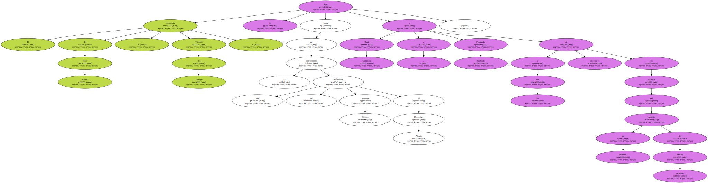Tras el entrenamiento de hoy , el técnico madridista dio las razones del descanso a dos jugadores básicos : " tenemos que proteger a jugadores de la plantilla que están muy castigados ".
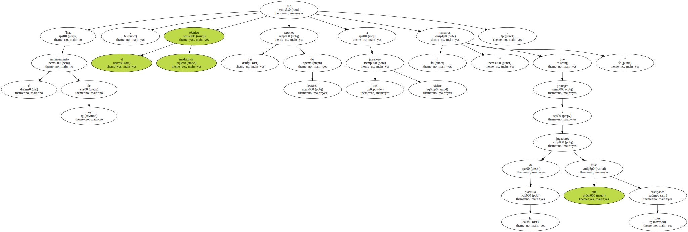" Todos los equipos lo hacen , y si nosotros no lo hemos podido hacer hasta ahora es por culpa de las lesiones " , afirmó Del Bosque.
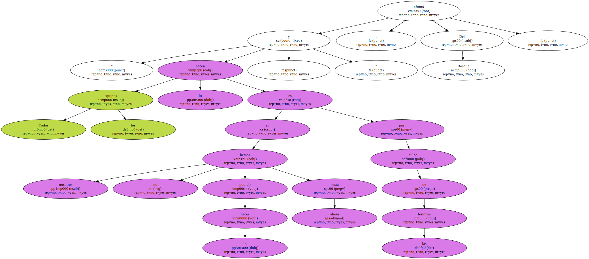Sobre el rival de mañana en el Santiago Bernabéu , el técnico salmantino mostró su profundo respeto : " es un equipo dotado de grandes jugadores y que tiene un entrenador que habla desde la cordura ".
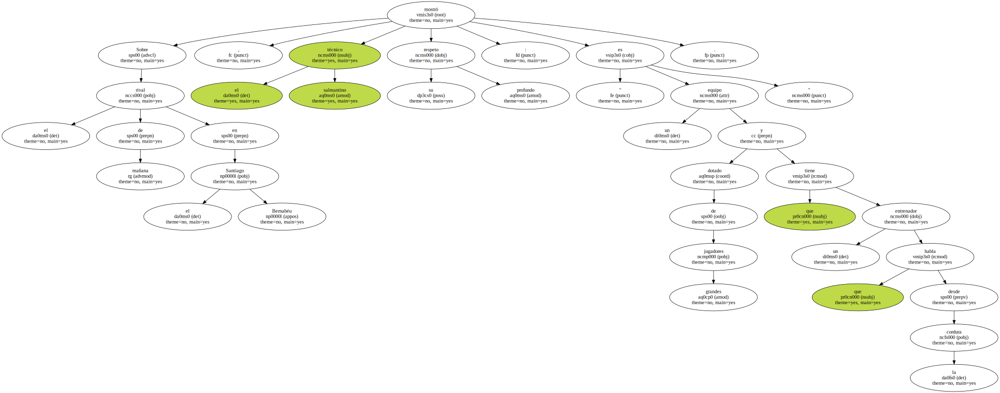" Están haciendo una temporada fantástica y se merecen el puesto que ocupan " , dijo Vicente Del Bosque.
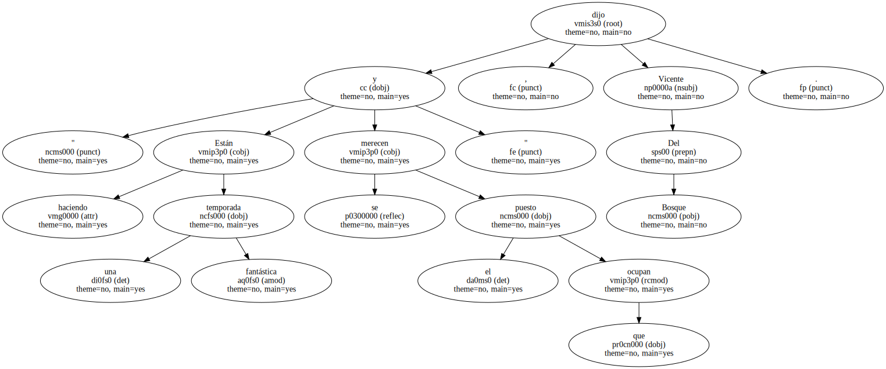" Aún así , esperemos que la resaca del Bayern no nos pase factura . Contra el Racing pagamos el esfuerzo y deseo y espero que no nos vuelva a pasar , ya que es un partido fundamental y debemos ganarlo porque todavía está todo en el aire y seguimos teniendo nuestras opciones " , continuó el entrenador.
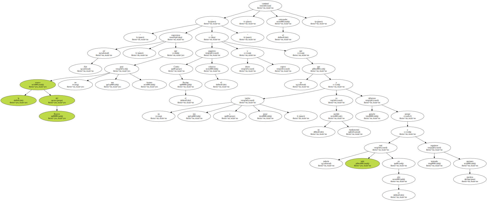Del Bosque todavía sigue confiando en el título de Liga.
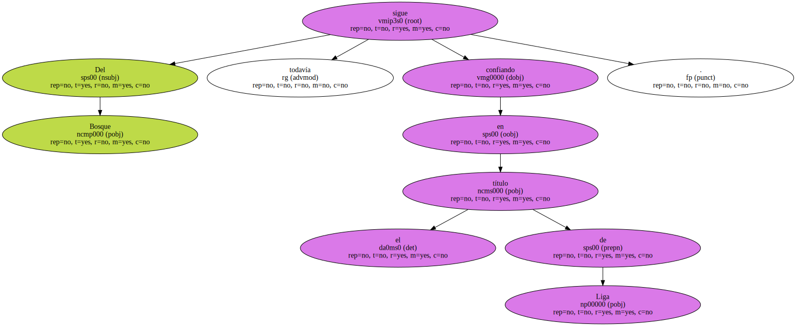" Distancias que parecían insalvables la realidad ha demostrado que no lo eran ".

" Es más , si nosotros no llegamos a pinchar ante el Racing estaríamos ahora segundos luchando por la Liga ".
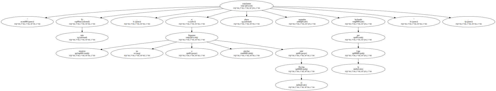" Sin embargo , el Deportivo lleva dos puntos de ventaja y es el máximo favorito al título de Liga . Si controlan esas cosas que suelen pasar a final de temporada , probablemente ganen el título " , continuó.
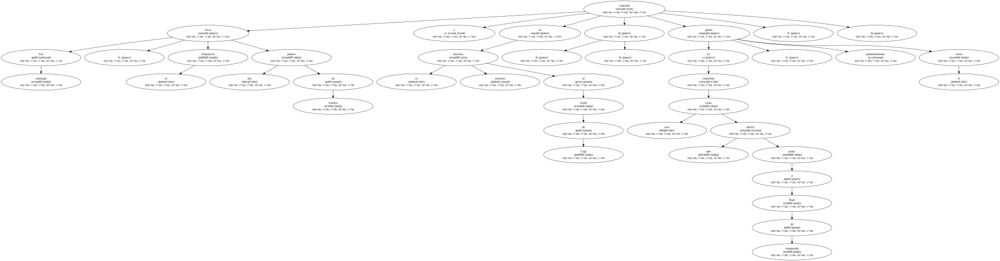El Alavés asumirá riesgos en el Bernabéu.
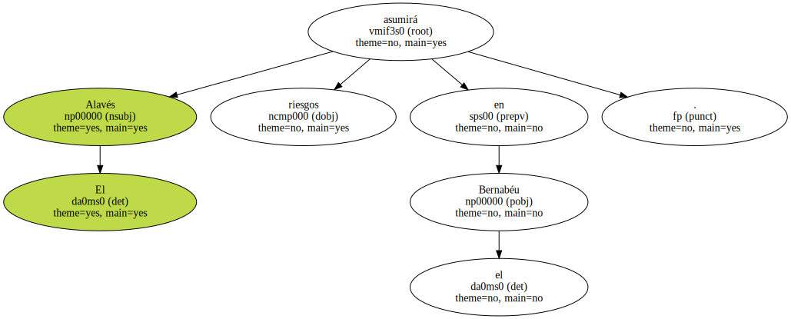Buscará una victoria que le permita sobrepasar al equipo madridista en la tabla clasificatoria y acrecentar sus opciones de participar en la Liga de Campeones de la próxima temporada.
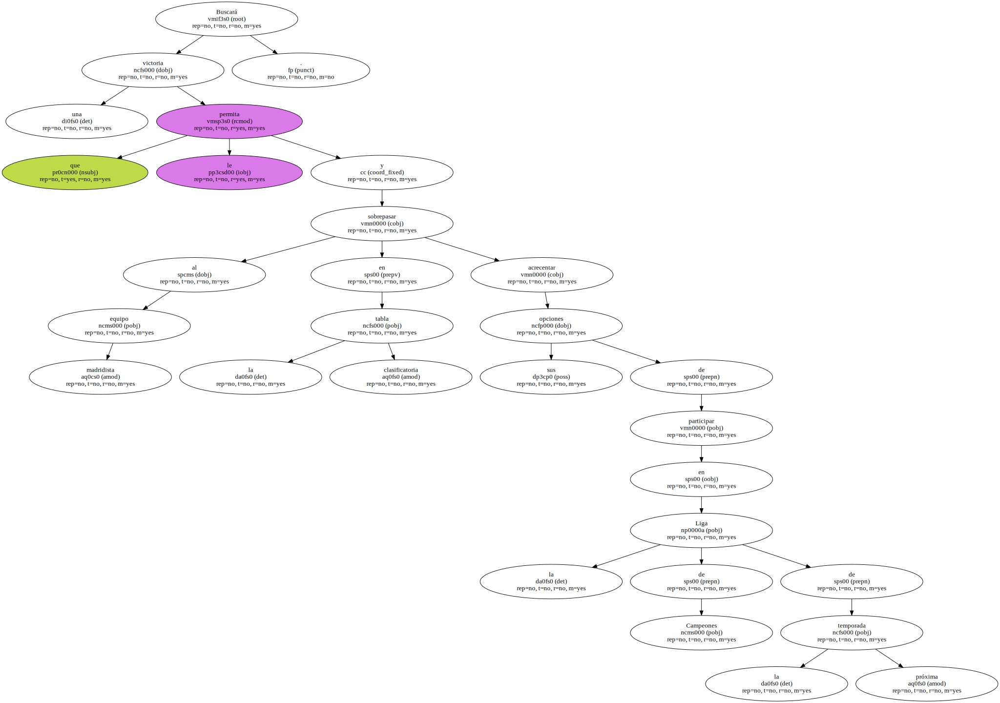Con la Copa de la UEFA prácticamente asegurada , dado que el único equipo que todavía puede poner en peligro a los albiazules , el Mallorca , tendría que sumar los nueve puntos en juego que restan y esperar a que el Alavés no sume ninguno , José Manuel Esnal " Mané " dotará a su equipo de una mayor ambición ofensiva para aspirar a jugar la máxima competición continental.
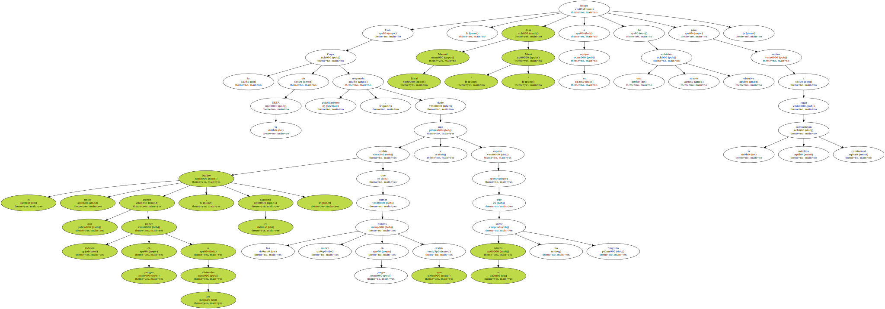Así , el técnico vizcaíno del combinado alavesista se ha decantado por un esquema de juego que le viene reportando grandes dividendos esta temporada cuando juega a domicilio , como el 4-2-3-1 , con la presencia en el mismo de jugadores con vocación atacante como Nan Ribera , Magno Mocelin , Astudillo y Javi Moreno.
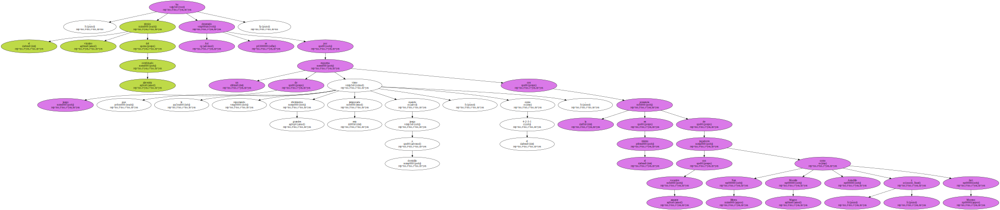Así , el técnico vizcaíno del combinado alavesista se ha decantado por un esquema de juego que le viene reportando grandes dividendos esta temporada cuando juega a domicilio , como el 4-2-3-1 , con la presencia en el mismo de jugadores con vocación atacante como Nan Ribera , Magno Mocelin , Astudillo y Javi Moreno.
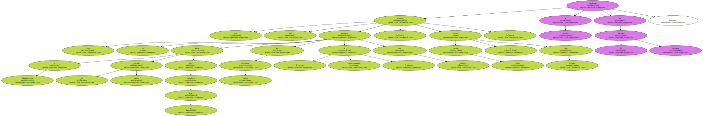Así , el técnico vizcaíno del combinado alavesista se ha decantado por un esquema de juego que le viene reportando grandes dividendos esta temporada cuando juega a domicilio , como el 4-2-3-1 , con la presencia en el mismo de jugadores con vocación atacante como Nan Ribera , Magno Mocelin , Astudillo y Javi Moreno.
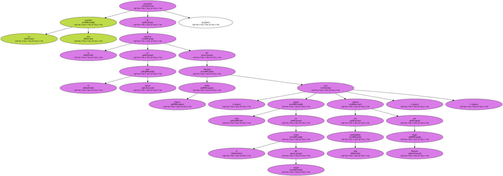Así , el técnico vizcaíno del combinado alavesista se ha decantado por un esquema de juego que le viene reportando grandes dividendos esta temporada cuando juega a domicilio , como el 4-2-3-1 , con la presencia en el mismo de jugadores con vocación atacante como Nan Ribera , Magno Mocelin , Astudillo y Javi Moreno.
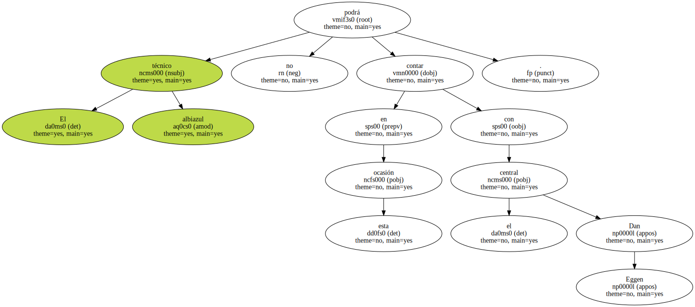Los dos hombres que no pudieron saltar a Mendizorroza por problemas físicos y por sanción , respectivamente , la pasada jornada ante el Real Valladolid , como Hermes Desio y Nan Ribera , regresarán al equipo en el Santiago Bernabéu.
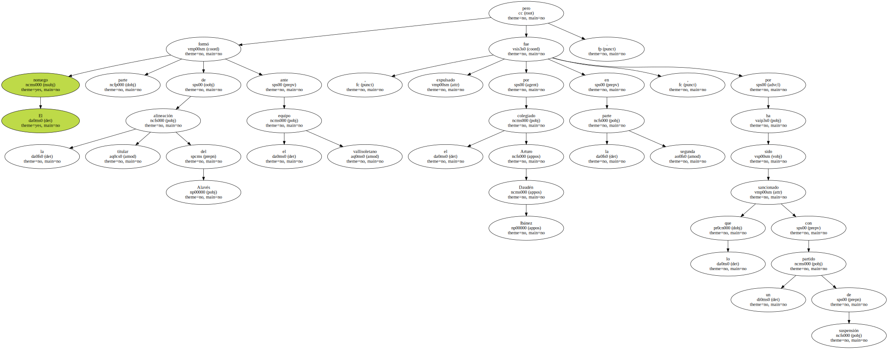La otra novedad provendrá de la ausencia en el once inicial del vitoriano Pablo Gómez , cuyo puesto en el centro del campo será cubierto , con toda probabilidad , por Angel Morales.
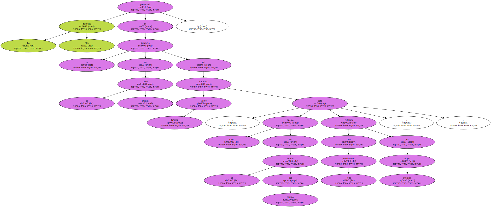El técnico albiazul no podrá contar en esta ocasión con el central Dan Eggen.
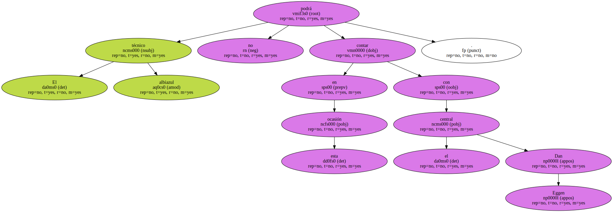El noruego formó parte de la alineación titular del Alavés ante el equipo vallisoletano , pero fue expulsado por el colegiado Arturo Daudén Ibánez en la segunda parte , por lo que ha sido sancionado con un partido de suspensión.
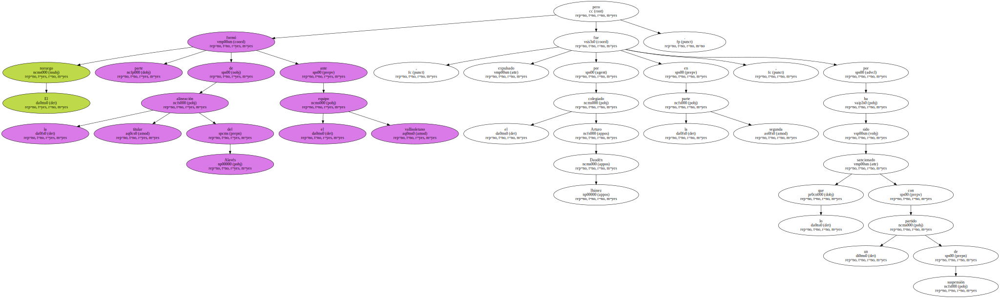